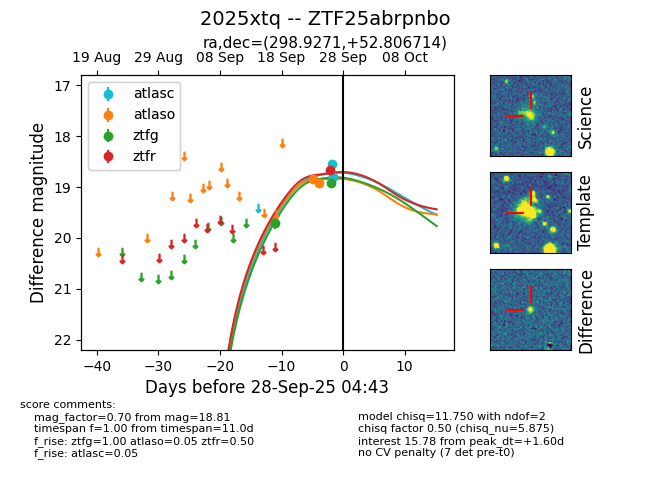
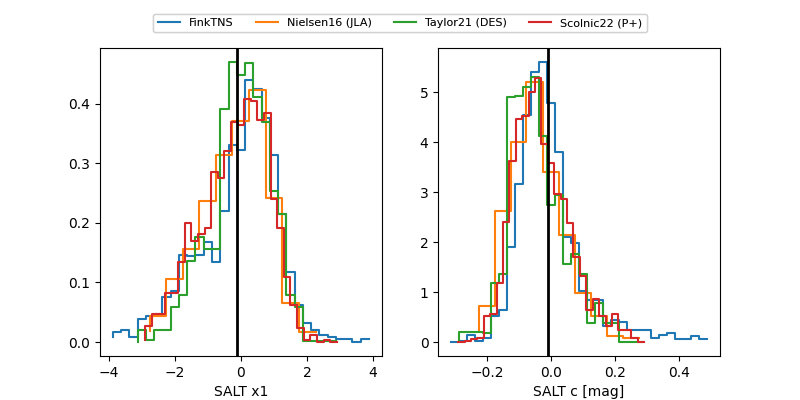

FINK: ZTF25abrpnbo
Lasair: ZTF25abrpnbo
ALeRCE: ZTF25abrpnbo
TNS: 2025xtq
YSE: 2025xtq
ZTF25abrpnbo (ztf,fink)
2025xtq (tns,yse)
equatorial (ra, dec) = (298.9271,+52.80671)
galactic (l, b) = (86.4398,+12.37642)


last atlasc=18.81, atlaso=18.92, ztfg=18.93, ztfr=18.66
2 atlasc, 2 atlaso, 2 ztfg, 1 ztfr detections